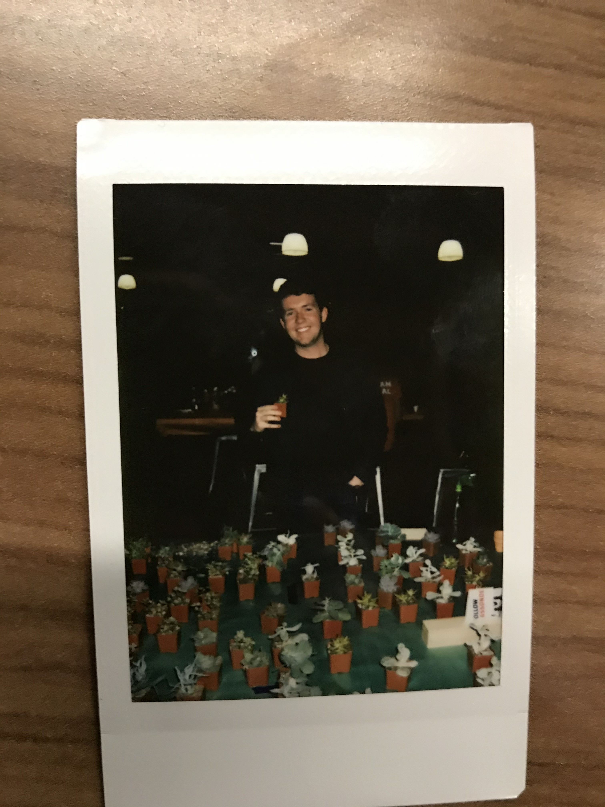
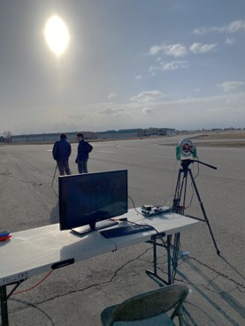
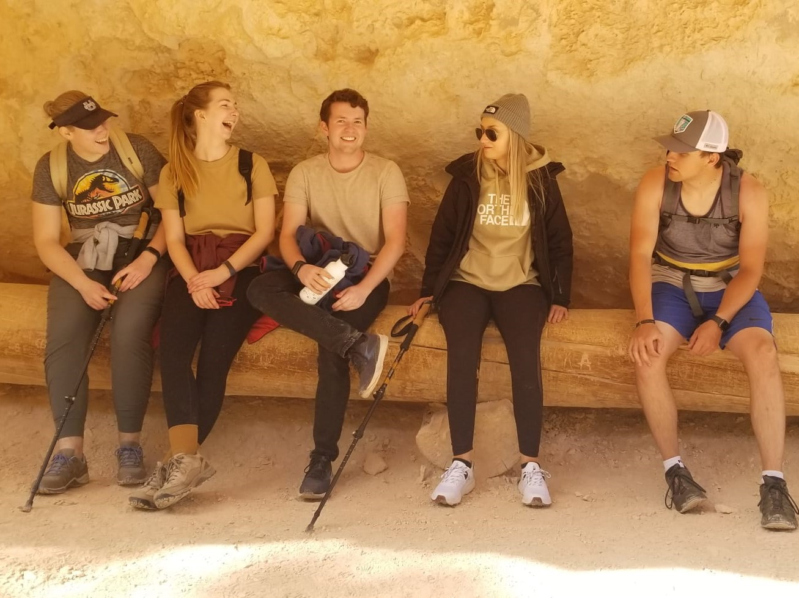
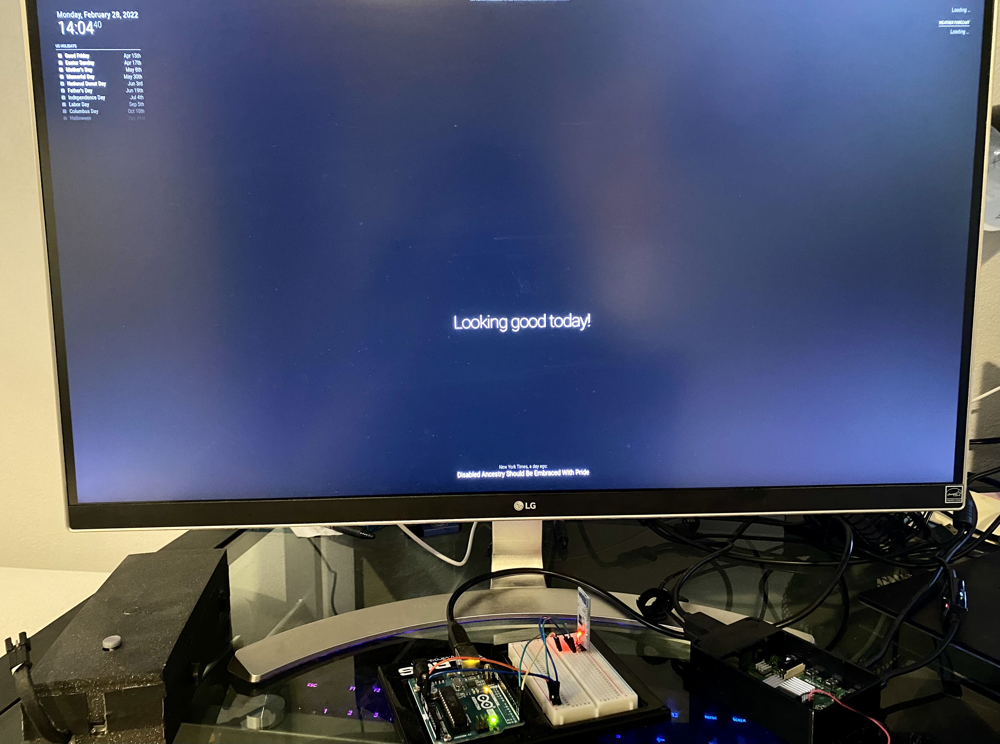
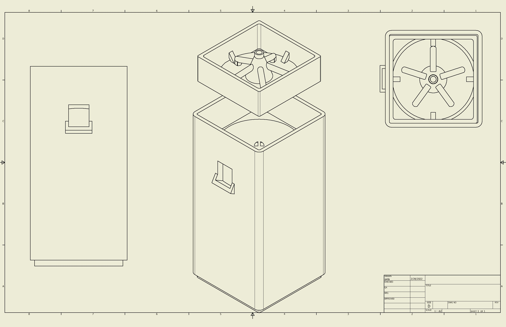

About Me
Welcome to my website!
Thank you for taking the time to visit my website! My name is Ian Lavin and I am currently a student attending the
University of Utah. I was born and raised in Eagle Idaho, just outside of the capital of Boise.
For the past four years I have been studying electrical engineering with an emphasis on microarchitectures and embedded systems. I
am currently pursuing my bachelors degree with future plans to work towards a masters degree. After finishing my degrees, I
plan on working in the industry as a hardware engineer. My ultimate goal would be to one day work as a project manager who oversees a
team of engineers. Hopefully through this website you can get the chance to learn a bit more about me and some of my interests and current projects!
There are many things I am interested in and you can learn more by clicking on the tab above. You can also get the chance to learn more about some of the
current projects I have been working on. One of those projects is this very website! I started working on this website as a way to practice and further
develop my coding skills while also getting the chance to show more about me and some of my accomplishments. I hope that you enjoy reading it and feel free
free to contact me if you have any questions!
Photos of me



Current Projects
Raspberry Pi Integrated Home System
As part of my interest in microcontrollers, recently I have been working on the design of a centralized
integrated home system. Utilizing a raspberry pi, multliple differnt devices will be connected and controlled
in a small internet of things system. This includes a strip of LED lights programmed with custom light animations,
two bedroom speakers, and a monitor with calender display. I additionaly plan to include a window blind opener
driven by a stepper motor and a temperature and light sensor for monitoring the health of my houseplants. All
these devices will be connected wirelessly through the use hm-10 bluetooth modules which will serially
transmit and recieve data for local arduinos. On the raspberry pi side, a basic UI has been integrated in
Python and is continually being expanded as new devices are connected.


Hydroponic Module
The design of hydroponic systems is a field I have had a wealth of prior experience in.
Numerous system designs already exist and each comes with its own benefits and drawbacks. However one
common issue shared by nearly all systems is scalability and flexibility of design. System size is rigidly
fixed and often involves the use of large inconvenient water tanks. This is why I have been pursuing the design
of a modular hydroponic system. Each module will be simple, self containted, and can be combined to scale to any desired size.
In addition, the hydroponic module would combine the ease of use of deep water systems with the area savings of vertical systems.
Multiple module designs have been constructed and are currently being tested to measure growth performance and compatability.
Project 3
This section still needs to be completed.
Contact
Thanks for visiting my website! If you want to get in contact with me my information is listed below.